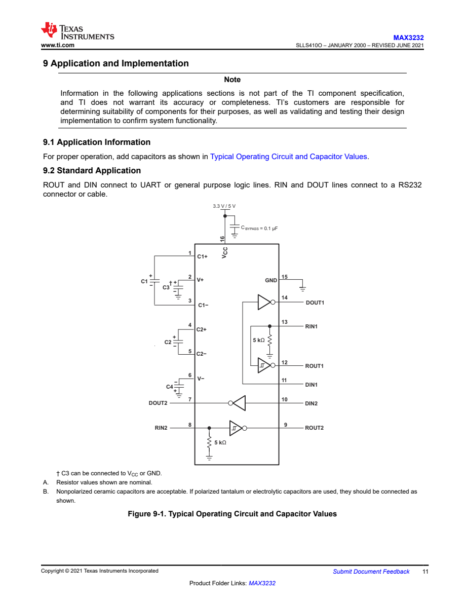

هویت و نوع پایه
شماره، نام نرمالشده و electrical type؛ شامل صحت تمام توابع و الزامهای اتصال نیست.
از سند، تا شاهد.
از شاهد، تا یک پاسخ قابل بررسی.

p11 · Figure 9-1{ "target": "MAX3232CD", "sections": 17, "status": "needs_review" }
با اسکرول، کامندها و خروجی نمایشی عوض میشوند. هر لایه یک مسئولیت مشخص دارد.
یک orchestration ترتیبی با نقشهای مستقل AI. کد ساختار و شواهد را کنترل میکند؛ مدلها سند را تفسیر میکنند.
روی هر نود بزن تا مسئولیت و تابع اصلی آن را ببینی.
PDFium و pdfplumber؛ مختصات و شناسهٔ هر شاهد حفظ میشود. جدول و پاورقی به هم مرتبط میمانند.
سند، اجرا، coverage و review در MongoDB؛ فایلها در GridFS؛ checkpoint محلی برای بازیابی پاسخ موفق.
زمان، توکنها، تلاشها و اندازهٔ ورودی ثبت میشوند. status / trace / coverage وضعیت اجرا را نشان میدهند.
مدل این اجرای گزارششده: gpt-6.1-sol / medium. سه نقش استخراج، blind read و review از همین مدل استفاده کردند. گسترش خودکار expanded اکنون غیرفعال است.
مقایسهٔ خروجی واقعی MAX3232CD / SOIC-16 (D) با مرجع مستقل پیشنهادی. هر عدد، دامنهٔ خودش را دارد.
مرجع در انتظار تأیید انسانیشماره، نام نرمالشده و electrical type؛ شامل صحت تمام توابع و الزامهای اتصال نیست.
دو حالت بازگشت C3، پس از همترازکردن ترمینالها؛ مستقل از مقادیر و شرایط خازن.
۲۷ از ۳۶ نیازمندیِ present در مرجع، در خروجی هم present اعلام شدهاند.
۹ پارامتر منتخب و صریحاً همتراز؛ این عدد امتیاز کامل footprint نیست.
| کنترل | نتیجه | تفسیر |
|---|---|---|
| پوشش ساختاری | 17 / 17 | هر ۱۷ بخش استخراج و بازبینی شدهاند. |
| توافق وضعیت نیازمندیها | 31 / 51 | حدود ۶۱٪ توافق status؛ درصد دقت ادعاها نیست. |
| تعداد ادعاها | 313 vs. 147 | دامنه و تفکیک متفاوت؛ بیشتر بودن یعنی دقیقتر بودن نیست. |
| Exact-match F1 | 0.46% | به نامها، expression و متن شرایط حساس است؛ برای accuracy معنایی معتبر نیست. |
| وضعیت نهایی | needs_review | ۱۴۵ رکورد خطا، هشدار یا ابهام؛ نه ۱۴۵ پاسخ غلط. |
سرایت دمای گرید I به C · خالیماندن min/max با وجود عدد در متن · طبقهبندی nominal بهعنوان typical · الزامهای اتصال جاافتاده
Review ایرادها را ثبت میکند؛ پاسخ استخراج فعلاً خودکار اصلاح نمیشود.مصرف ثبتشدهٔ همان اجرای واقعی؛ این اجرا در بخشهای ابتدایی چهار expanded داشته و در ادامه با مسیر بدون گسترش تمام شده است.
۵۵ درخواست موفق یکتا: ۱۹ استخراج، ۱۹ بازخوانی و ۱۷ بازبینی.
زمان دیواری 104 min 41 s شامل توقف و بازیابی است؛ benchmark بدون وقفه نیست.
51,712 توکن cached جزئی از ورودی، و 13,834 توکن reasoning جزئی از خروجی است؛ دوباره جمع نشدهاند.
در مقایسهٔ آفلاین بستهٔ شواهد بخش نتلیست، ورودی متنی حدود ۸۲٪ و تعداد تصاویر ۵۶٪ کمتر از مسیر legacy شد. این کاهش ورودی، ادعای افزایش accuracy یا کاهش اندازهگیریشدهٔ زمان کل نیست.
گزینههای زیر نقشهٔ توسعهاند. در نتیجهٔ فعلی فعال نیستند و به benchmark و دادهٔ معتبر نیاز دارند.
تصمیمهای محدود مانند انتخاب صفحه، نوع بخش، ارتباط شاهد با هدف و نیاز به بررسی انسانی را میتوان به یک مدل decision سپرد. استخراج کامل JSON همچنان وظیفهٔ جداگانهای است.
pplx-decider-v1.1-27b یک checkpoint تصمیمگیری با readout جداگانه است. استفاده و fine-tuning برای این مسئله، پیشنهاد پژوهشی است و هنوز اجرا یا ارزیابی نشده. باید با برچسبهای صفحات و شواهد درست/نادرست و مجموعهٔ آزمون مستقل بررسی شود.
طبق model card، مسیر inference اختصاصی باید حفظ شود؛ سقف ورودی ۸٬۱۹۲ توکن است و وزنهای اعلامشده حدود ۴۹ GiB حافظه میخواهند، بهعلاوهٔ حافظهٔ کاری. صرف نصب مدل، تضمین سرعت یا دقت نیست.
Model card رسمی در Hugging Face ↗مدل سبکتر برای classification و routing؛ مدل قویتر برای جدول، مدار و بازبینی موارد حساس. معماری LLM Provider محل تعویض backend را دارد، ولی مسیردهی خودکار به مدل متفاوت برای هر نقش هنوز پیادهسازی نشده است.
تصمیم انتخاب مدل باید با هزینهٔ واقعی، زمان، پوشش و خطاهای بحرانی سنجیده شود. فعلاً هیچ درصد دقت یا صرفهجویی برای یک مدل جایگزین اعلام نمیکنیم.
محدودکردن دقیق شواهد به مدل و پکیج، برش معتبر تصویر بهجای صفحهٔ کامل، حذف شرایط تکراری از پاسخ و رساندن فقط شواهد موردنیاز به reviewer. هر تغییر باید با پاسخ مرجع ثابت سنجیده شود.
پشتیبانی از دو worker در کد وجود دارد؛ اجرای گزارششده با یک worker انجام شد. موازیسازی میتواند زمان دیواری را کم کند، اما تعداد توکنها را خودبهخود کم نمیکند و اثرش هنوز benchmark نشده است. گسترش خودکار اکنون غیرفعال است.
ایندکس فعلی عنوان، متن، جدول، پاورقی و ارجاعها را نگه میدارد. BM25 بر متن دارای context اجرا میشود و لینکهای صریح تا دو hop دنبال میشوند؛ بنابراین نزدیکی صفحه تنها معیار انتخاب نیست.
Embedding و reranker محلی بهصورت اختیاری پشتیبانی میشوند، ولی در این اجرا فعال نبودند. مرحلهٔ بعد، سنجش recall شاهد و تشخیص اینکه خطا از انتخاب منبع آمده یا از خواندن آن است.
نام استاندارد پارامتر، واحد و قرارداد ثابت min/typ/max، همترازی ترمینالهای مدار و نمرهٔ جداگانه برای عدد، شرط، هدف و استناد. Exact-matchِ متن آزاد برای سنجش accuracy کافی نیست.
مرجع فعلی candidate است. ابتدا خطاهای پیداشده در آن اصلاح و تأیید انسانی ثبت میشود؛ سپس یک نسخهٔ ثابت برای مقایسهٔ معماریها نگه میداریم. دادهٔ gold نباید وارد پرامپت استخراج شود.
بازبین فعلی مسئلهها را ثبت میکند و جواب اول را بازنویسی نمیکند. قدم بعدی، اصلاح محدود به ادعاهای مسئلهدار با شاهد اصلی، حفظ نسخهٔ قبل و بعد، و اجرای دوبارهٔ validator است.
توافق دو مدل بهتنهایی مدرک صحت نیست. وضعیت ambiguous یا needs_review باید قابل مشاهده بماند تا جواب نامطمئن به پاسخ قطعی تبدیل نشود.